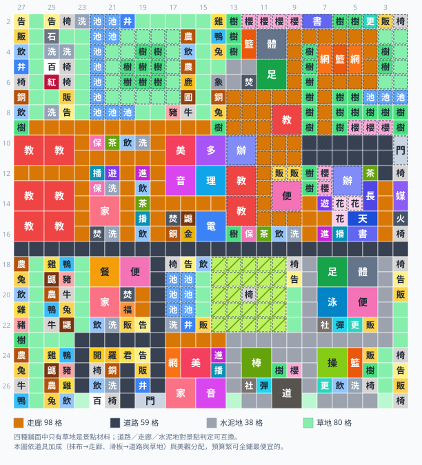

口袋學院物語2 百靈山丘完美佈局
第五張地圖「百靈山丘」（ヒバリヶ丘，26×26）的完美佈局，採分區優先的規劃法：先按高台網／低地網兩張互不相通的動線網劃出語意清楚、成塊的 28 個分區，再讓四種鋪面各自對應分區語意——走廊連接室內設施、水泥地是戶外運動場面、草地通往農牧與水岸、道路只管對外動線，最後才求景點數。結果是 188 棟建築、29 個人氣景點全部成立、0 棟走不到、0 格孤立路面，而且初始 9 棟全部原地沿用、拆除 0 棟、20 格水塘與 24 格斜坡一格不動。本圖另外備足滿編校舍：9 間教室（1～3 年級各 3 班）與 2 間辦公室（遊戲上限）全部到位，多出來的三棟蓋在舊校舍高台那片閒置的原生走廊上，景點一個都沒少。它同時是全站唯一一張「29 組景點全靠手放」的圖——兩張網讓求解器看不到高台上的原生設施，每一組的落點都是幾何上唯一的解。可以點下面的按鈕直接載入佈局模擬器。

（圖可左右拖動）格子上的字是設施簡稱，一棟多格建築畫成一個大方塊，虛線深色外框是高地（高地空地填成暖灰），帶斜線的黃綠色是斜坡。四種鋪面刻意不逐格標字，改看圖下方的鋪面圖例（色塊＋格數）——本圖的鋪面就是分區的顏色，一眼看得出哪塊是校舍、哪塊是運動場、哪塊是農牧。邊緣數字是遊戲內座標（上方 Y、左側 X）。這張圖請特別注意右上角那一大片虛線框：那整塊就是初始校園所在的東北高地，它跟旁邊的低地之間沒有任何斜坡，是 2 層落差的懸崖；圖正中央那圈黃綠色斜線則是中央山丘，全圖 24 格斜坡都在那裡。
分區優先：這張圖的設計原則
多數百靈山丘佈局圖的目標是「把 29 個景點湊滿」，鋪面則是事後補上的視覺語意——於是「農牧園區」裡站著三座球場。本圖把順序倒過來：先劃成塊的分區 → 再用材質對應的路連起來 → 最後才求景點數，切成 28 個分區；硬指標只剩「0 棟建築走不到」與「0 個孤立通行格」。這張圖最後放棄清單是空的，但那是結果不是目標（詳見景點那一節）。三步的完整說明、為什麼不硬湊 29、路網品質怎麼量，都在佈局範例集的通用設計原則，本頁只講百靈山丘特有的取捨與數字。
百靈山丘的地形：一張圖，兩張互不相通的網
百靈山丘是「市中心的富人區」，開局資金比別的鎮多 40 萬——這筆錢本圖有明確的用途，等一下就會講。地圖是 26×26 格，676 格裡有 489 格是低地空地（高度 1，一片空白，是五張圖裡最大方的一塊），另外 187 格是高地：16 格高度 2＋171 格高度 3。
問題出在那 187 格的分布。初始校園整個坐落在東北那塊高度 3 上，而遊戲的移動規則是「高差 1 會在較高那一格自動生成斜坡（走得過去），高差 2 就是斷崖（永遠走不過去）」。全圖僅有的 16 格高度 2 在正中央那座小山丘，跟東北高台八竿子打不著。也就是說：
| 動線網 | 範圍 | 校門 | 裡面有什麼 |
|---|---|---|---|
| 高台網（舊校舍） | 東北高地 X2–X15 / Y13–Y2 | 原生東門 X10–X11/Y2 | 開局送的 9 棟校舍全在這裡，本圖再手放 18 棟 |
| 低地網（新校區） | 489 格低地空地＋中央山丘 | 沒有——必須自己加開 | 本圖新蓋的 170 棟全在這裡 |
兩張網永遠不會相通：東北高地與低地之間全是 2 層落差，中間沒有一格高度 2 可以生出斜坡，而玩家不能改地形（橡皮擦只能擦掉地物，擦不出高度）。所以這張圖的第一個決定就是「低地要自己開一座校門」——多出來的那 40 萬，正好拿去付開門與全區鋪路的前期開銷。
| 健康鎮 | 溪谷小鎮 | 百靈山丘 | |
|---|---|---|---|
| 地圖尺寸 | 26×24 | 26×26（三層地形） | 26×26（座標 X2–X27 / Y2–Y27） |
| 校門位置 | 左側（直式 1×2） | 上緣原生＋南緣自開 | 右上角高台 X10–X11/Y2（原生，只服務高台）＋南緣 X27/Y19–Y18（自己開，低地唯一的門） |
| 水塘 | 34 格 | 16 格，一格不鑿 | 20 格，一格不動（水面都記在高度 3，鑿掉只會留下四面是崖的孤格） |
| 高地 | 南北兩塊，邊界自然生成斜坡 | 台地 220＋高地 164 格，136 格天然坡道 | 187 格，含整個初始校園；對低地全是 2 層懸崖，擦不出坡道 |
| 斜坡 | 沿高地邊界 | 142 格（原生 136＋擦出 6） | 只有 24 格，全部集中在中央山丘 |
| 既有地形雜物 | 樹林、花壇 | 櫻並木、竹林、田埂路 | 田埂路 18 格——少，但剛好把 4 棟球場整圈圍死 |
| 初始設施 | 少數舊校舍 | 6 棟，全被斷崖困住 | 9 棟（體育館／網球場×2／籃球場／教室／辦公室／便利商店／販賣機×2）全部原地沿用、拆除 0 棟 |
| 路網座標 | X7 / X12 / X17 / X22 ＋ Y21 / Y16 / Y11 / Y6 | 棋盤路網只長在谷底 | X9 / X17 / X23 ＋ Y23 / Y18 / Y13 / Y8 / Y3（只長在低地） |
| 幹道脊椎（鋪道路） | X17 ＋ Y11 / Y16 | 只宣告南門那一截 | X17 崖下大道（全寬）＋ Y18 南門縱脊（X17–X26）——本鎮的脊椎串不起兩座門，因為中間隔著懸崖 |
| 鋪面配比 | 走廊 101／道路 84／草地 75／水泥地 14（走廊 37%） | 草地 70／道路 41／走廊 37／水泥地 33（走廊 20%） | 走廊 98／草地 80／道路 59／水泥地 38（走廊 36%，五鎮最高） |
最後那一列最能看出分區優先的差別。「鋪面事後補」的典型症狀是草地 159／道路 124／走廊 67／水泥地 4——走廊只占 19%、水泥地只有 4 格當門前廣場，因為路網先一律鋪成道路、剩下的空地再一律填草。改成分區優先之後，校舍區的街道全部變成走廊、四塊運動分區長出 38 格水泥地，走廊反而成了最大宗。
崖下借位的正確規則：窗口可以跨崖，動線必須同高
這是本鎮的招牌手法，也是「初始 9 棟一棟都不用拆」的原因。但這裡有兩件事很容易被混為一談，先分清楚再看圖：
② 但建築的出入口必須同高——「走得到」的判定是三個條件同時成立：鄰格可通行、從任一校門走得到、而且真的踏得進去（跨不過落差就不算）。
換句話說：窗口可以跨崖，動線不行。借位借的是「材料出現在同一個窗口裡」這件事，不是「那條路可以走」。
百靈最容易在這條界線上翻船。把崖下行政帶的門面留在「隔著 2 層懸崖的高台走廊」，圖上窗口成立、學生卻上不去——校長室 X12/Y4、多媒體教室 X12/Y3、餐廳 X14/Y8 是三個最常中招的位置。解法不是逐棟補救，而是把整條崖下行政帶的門面改成崖下同高的通路：Y8 與 Y3 兩條縱街加上X17 崖下大道（低地唯一橫貫全圖的東西軸），讓每一棟崖下建築都從低地那一側進門。問題於是自己消失，而所有跨崖窗口一個都沒少。本圖靠跨崖窗成立的景點有這幾組：
本圖真正靠跨崖窗口成立的景點有四個，而且全部集中在兩處懸崖：
- 選舉＝高台原生辦公室（X12–X13/Y6–Y5）＋崖下的校長室（X13–X14/Y4）＋高台玄關手放的茶室（X12/Y4），窗口 X10/Y7 橫跨東緣那道崖。這是全圖唯一「一件材料在崖上、一件在崖下」的景點。
- 力量（窗口 X2/Y23）與水岸（同一個窗口）＝西北高地那片玩家永遠上不去的原生草坡、森林與水塘，加上崖下手放的水井（X2/Y20）與洗手間（X2/Y23）。兩個景點只新建 2 棟，是全鎮最便宜的一組。
- 菜園（窗口 X2/Y19）＝同一片上不去的原生草坡當「草地」材料＋崖下的小農場與飲水處。
另外兩棟原生設施常被算進跨崖窗的功勞簿裡，實際上都不成立——攻略文常說百靈有 6 組跨崖窗、原生體育館能餵「熱情」、原生便利商店能餵「購物／澀谷」，但真的排一次就會發現：
- 原生體育館確實落在「熱情」的判定窗口裡，但「熱情」要的是足球場＋籃球場＋焚化爐，體育館根本不是它的材料；而「熱血」需要的第三座 2×2（游泳池）在崖下那 8 格排不下，所以「熱血」改在南邊的運動園區自建一座體育館。原生體育館於是原地保留、但沒有任何景點用到它。
- 原生便利商店同理：「購物」與「澀谷」各自需要一座跟餐廳／足球場同框的便利商店，而崖下前庭那 4 格排不下 2×2，兩個景點只能在商店街與運動園區各蓋一座。原生那座也就沒被任何景點用到。它是全遊戲解鎖最苛的設施（超大型學校＝學生 18＋景點 3 種＋第 4 年＋平均 300 分），開局白送一座，留著不虧、拆了可惜，但它不再是任何景點的材料。
換算下來：初始 9 棟全部原地沿用、拆除 0 棟，其中真正被景點回收的是 2 棟（網球場餵「約會」、辦公室餵「選舉」）。這比常見說法的「9 棟全部變現」保守得多，但那才是這張圖實際的樣子。
開局三件事：田埂路、南門、孤立口袋
這三件事都要在動土之前做完，順序不能顛倒：
- 把高台那 18 格田埂路覆蓋成走廊，救出開局就走不到的 4 棟球場。高台上的體育館（X3–X4/Y11–Y10）、兩座網球場（X4–X5/Y7、Y5）與籃球場（X4–X5/Y6）被 18 格田埂路整圈圍住。田埂路看起來像路，但在動線判定裡它跟樹林一樣不可通行——所以這 4 棟從第一天起就是「走不到」。做法很單純：把那 18 格全部覆蓋成走廊（沿用原本的高地高度），球場環就經 X5–X7/Y9 那段原生走廊與高台的原生柏油路接回東門，一次歸零。這是本圖唯一的高台工程，材料開局就有。
為什麼不是自動處理掉的：鋪路程式只鋪高度 1 的格子（避免壓到坡道與高地地物），所以高台上的 18 格得在準備階段自己覆蓋。
- 低地必須自己開一座校門，而且要「先開門、再蓋房」。489 格低地空地上一座門也沒有，不開門的話整個低地在判定上都是「走不到」，一棟建築都不該蓋。本圖把橫式校門開在南緣 X27/Y19–Y18。順序很重要：可達性是從每一座校門同時往外算的，而「哪些格可以蓋建築」又是用可達性決定的——晚開的話低地會少掉一大批可蓋位置，而且門前那兩格早就被別的建築佔掉了。
兩張網各自有門，全圖就是 0 棟走不到——這是模擬器的判定方式（可達性取所有校門的聯集），也符合實機。
- 把 14 格孤立口袋先種樹封起來。低地上有 3 塊地兩張網都走不到：X5/Y19 的 1 格深坑、X6–X9/Y8 那條 4 格峽谷（夾在高台走廊與田埂路之間）、X7–X9/Y6–Y2 的 9 格東緣口袋。本圖在規劃階段就把它們種成樹林封死，理由不是美觀：包圍判定不看高低差，隔著 2 層懸崖鄰接高台走廊會出現「判定合格、實際走不到」的假通過（實測不封的話，音樂室與理科室真的會被排進東緣口袋）。封起來才誠實。
分區規劃：28 個分區、四種鋪面
全圖切成 6×6 ＝ 36 個街廓（列 X2–X5／X6–X8／X10–X12／X13–X16／X18–X22／X24–X27，欄 Y27–Y24／Y22–Y19／Y17–Y14／Y12–Y9／Y7–Y4／Y2），每個街廓都宣告名字與鋪面（不留無主的街道），相鄰且同語意的合成一個分區，共 28 個。下面按鋪面分成四組來講——在這張圖裡鋪面就是語意，「為什麼鋪這個」只要在每組開頭講一次就夠。
| 分區 | 範圍 | 鋪面 | 階段 |
|---|---|---|---|
| 教學區 | X10–X16 / Y27–Y24 | 走廊 | 2 |
| 生活館 | X10–X16 / Y22–Y19 | 走廊 | 1–2 |
| 專科館 | X10–X16 / Y17–Y14 | 走廊 | 3 |
| 舊校舍高台 | X10–X12 / Y12–Y9（高地） | 走廊 | 1 |
| 崖下前庭 | X13–X16 / Y12–Y9 | 走廊 | 1 |
| 崖下行政區 | X13–X16 / Y7–Y4 | 走廊 | 3 |
| 崖下行政別館 | X13–X16 / Y2 | 走廊 | 3 |
| 商店街 | X18–X22 / Y22–Y19 | 走廊 | 3 |
| 家政・被服棟 | X24–X27 / Y17–Y14 | 走廊 | 3 |
| 崖下球場 | X2–X8 / Y12–Y9 | 水泥地 | 3 |
| 高台球場 | X2–X5 / Y7–Y4（高地） | 水泥地 | 1 |
| 運動園區 | X18–X22 / Y7–Y4 | 水泥地 | 4 |
| 南運動場 | X24–X27 / Y12–Y9 | 水泥地 | 3 |
| 東南運動廣場 | X24–X27 / Y7–Y4 | 水泥地 | 4 |
| 北西湖畔公園 | X2–X8 / Y27–Y24 | 草地 | 1 |
| 西北高地景觀窗 | X2–X8 / Y22–Y19（高地） | 草地 | 1 |
| 北農牧・動物園 | X2–X8 / Y17–Y14 | 草地 | 1／4 |
| 高台東緣草徑 | X2–X5 / Y2（高地） | 草地 | 1 |
| 東緣孤立口袋 | X6–X8 / Y7–Y2 | 草地 | — |
| 農牧園區 | X18–X22 / Y27–Y24 | 草地 | 1 |
| 池畔綠帶 | X18–X22 / Y17–Y14 | 草地 | 1 |
| 中央山丘 | X18–X22 / Y12–Y9（高地 2） | 草地 | — |
| 東緣步道 | X18–X22 / Y2 | 草地 | — |
| 農牧南區 | X24–X27 / Y27–Y24 | 草地 | 3 |
| 東南步道 | X24–X27 / Y2 | 草地 | 4 |
| 高台校門玄關 | X10–X12 / Y7–Y4（高地，原生柏油路） | 道路 | 1 |
| 東門 | X10–X12 / Y2（高地） | 道路 | 1 |
| 南門玄關 | X24–X27 / Y22–Y19 | 道路 | 1 |
走廊區：校舍內動線（12 個街廓、98 格走廊）
走廊（木造廊下）在遊戲裡屬「校舍內」，所以凡是室內設施——教室、辦公室、專科教室、圖書室、保健室、餐廳、福利社——全部收進走廊分區。百靈的走廊分成兩塊：低地中段那 84 格連續平地切出來的校舍三帶（教學／生活／專科），與沿著東邊懸崖底下的崖下前庭、行政區、行政別館，再往南接商店街與家政棟。走廊也是四種鋪面裡唯一開局就能鋪、而且最便宜的一種，正好對得上校舍是最早蓋的。
校舍三帶：教學區／生活館／專科館（6 街廓）
低地中段 X10–X16 × Y27–Y14 是全圖唯一一片連續 84 格的乾淨平地，本圖把整片給校舍。三帶各有一個主題：教學區的 28 格被 6 間 2×2 教室加一條 4 格橫廊排滿——這一帶塞不下第 7 間（7 間就是 28 格，一條走廊都不剩，中排那兩間立刻沒有門），所以剩下的三間教室改蓋在舊校舍高台上；生活館是本圖最省的一區——飲水處、保健室、茶室、洗手間、焚化爐與一座家政室（X14–X15/Y22–Y21）擠成一團，三個景點的材料層層互相共用：家政室同時餵「家庭」與「燒水」，保健室同時餵「好友」與「家庭」，所以家政室只蓋一座；專科館的 28 格剛好排下 5 座 2×2（美術室 X10–X11/Y17–Y16、多功能室 X10–X11/Y15–Y14、音樂室 X12–X13/Y17–Y16、理科室 X12–X13/Y15–Y14、電腦室 X15–X16/Y15–Y14）＋焚化爐、飼育鼴鼠、銅像、金像。
專科館是這張圖最漂亮的一手：三個互相錯開的 4×4 窗口（X9/Y18、X12/Y18、X13/Y18）一次成立藝術、怪談、生物、名門四個景點——音樂室同時餵藝術與怪談、理科室同時餵怪談與生物、電腦室同時餵生物與名門。右尺寸化之後五座 2×2 就是 20 格，加四棟 1×1 與一條 4 格橫廊剛好 28 格——全圖找不到第二個街廓做得到，所以「專科館」的位置不是畫出來的，是算出來的。
三帶都手鋪了一條「貫穿 X17 崖下大道與北邊 X9 大道」的走廊脊，內圈才有門面：這一帶東西兩側只有 Y23／Y18／Y13 三條縱街，光靠臨街面只有一半的格子排得下建築。
崖下行政帶：崖下前庭／崖下行政區／崖下行政別館（4 街廓）
東邊懸崖底下那一條，是全圖景點密度最高的地方。崖上是原生辦公室（X12–X13/Y6–Y5），崖下 15 格排進校長室（X13–X14/Y4）、天象館（X15/Y5–Y4）、圖書室（X16/Y5–Y4）、宇宙火箭（X15/Y2）、多媒體教室（X13–X14/Y2）——選舉（校長室＋崖上辦公室＋玄關的茶室 X12/Y4，窗口 X10/Y7）、學習（校長室＋圖書室＋多媒體教室，窗口 X13/Y5）與宇宙（宇宙火箭＋天象館＋多媒體教室，窗口 X12/Y5）三個景點共用同一批材料，全校唯一那間校長室一次餵兩個、多媒體教室也一次餵兩個。崖下前庭則是原生便利商店正下方那 4 格，是舊校舍與新校區之間的過渡帶。
X15/Y7 與 X15/Y6 那兩格走廊必須留空：北邊 X14/Y6–Y5 是高台邊緣的原生花壇（不可通行），那兩格是這一區唯一的南北動線，蓋掉就會有建築走不到（實測過）。
商店街
20 格排下餐廳（X18–X19/Y22–Y21）、便利商店②（X18–X19/Y20–Y19）、家政室（X20–X21/Y22–Y21）三座 2×2＋福利社（X21/Y20）＋焚化爐（X20/Y20）。這一區的餐廳一棟餵三個景點：「購物」（福利社＋便利商店②＋餐廳，窗口 X18/Y23）、「吃醋」（焚化爐＋餐廳＋家政室，窗口 X15/Y25 跨過 X17 崖下大道往北借生活館的家政室與焚化爐）、「特盛」（養豬＋養牛＋餐廳，窗口 X17/Y25 跨過 Y23 縱街往西借農牧園區的豬牛）。
這是分區優先最見功力的一處：一般為了湊「特盛」，會把餐廳與家政室整組塞進農牧區，於是農牧園區裡站著餐廳。本圖把豬牛釘在農牧園區最東那一欄（X19/Y24、X20/Y24），讓窗口自己跨街，牲畜留在草地區、餐廳留在走廊區，兩邊語意都不破。
家政・被服棟
「時尚」＝網球場＋美術室＋家政室，三件都是多格設施（1×2＋2×2＋2×2＝10 格），全鎮只有這個 16 格街廓塞得進同一個 4×4 窗口（專科館那 28 格已被前面四個景點排滿）。
網球場是這一區唯一的語意妥協：運動設施蓋進了走廊分區。「時尚」的三件材料就是這樣搭的，換不掉，帳記在誠實說明。
舊校舍高台（滿編校舍的最後三棟）
整個街廓都在高度 3，沒有一格低地可用——原生走廊、販賣機 ×2 與那間關鍵的便利商店都在這裡。既有 9 棟全部原地沿用、拆除 0 棟。這一區的原生格局其實一格都不必動，本圖另外多蓋了三棟：辦公室②（X10–X11/Y13–Y12）、教室⑧（X12–X13/Y13–Y12）、教室⑨（X14–X15/Y13–Y12）。
理由是滿編校舍：遊戲裡 1～3 年級各能開 3 個班，教室固定要 9 間，辦公室上限 2 間——兩者都不是任何景點的材料，正因如此最容易在排景點時被擠光。低地教學區那 28 格只排得下 6 間教室，高台原生的教室與辦公室各 1 間，還差 2 間教室 ＋ 1 間辦公室 ＝ 12 格。這 12 格全部從高台西半 Y13–Y11 那片 27 格閒置的原生走廊裡出：不動任何景點材料、不拆原生建築、不碰低地，所以29 個景點一個都沒少。語意也最順——舊校舍高台本來就是「初始校園」，新的教室與辦公室蓋在原生教室隔壁。
三棟一律靠 Y13–Y12 兩欄、把 Y11 整條留成走廊，這是唯一同時滿足四個門面條件的排法：① 原生販賣機（X12/Y9）四鄰只有 X11/Y9 走得到（東邊是 2 層懸崖、南邊是便利商店、西邊是同型販賣機不算門），所以 X10–X11 那兩列的 Y10–Y9 不能蓋；② 原生便利商店（X13–X14/Y10–Y9）四鄰只剩 Y11；③ 原生教室（X8–X9/Y10–Y9）靠 X7 那列與 Y11；④ 高台西半要留一條 X9→X10→X11 的縱向連通，否則 Y11 南段整條孤立。Y11 的 X12–X15 這 4 格走廊因此一格都不能收——它同時是兩間新教室與那間便利商店唯一的出入口，就算它看起來像一條沒必要的死路，也不要為了整理動線把它拆掉。
水泥地區：戶外運動場面（6 個街廓、38 格水泥地）
水泥地（パネル廊下）是四種鋪面裡最晚解鎖的一種（要升到超大型校），剛好對上運動設施的開放時機——體育館要有望學園、游泳池要名門學園。本鎮有四塊運動分區，其中兩塊是刻意貼著原生球場與中央山丘長出來的（借它們當景點材料），另外兩塊在東南角連成一整片，全圖共 38 格水泥地——比「只在門口點綴 4 格」的鋪法整片得多。
崖下球場（借原生體育館）
原生體育館（X3–X4/Y11–Y10）就在崖上，崖下只有 8 格低地可用：足球場（X5–X6/Y11–Y10）＋籃球場（X3–X4/Y12）＋焚化爐（X6/Y12）剛好排滿，窗口 X3/Y14 成立「熱情」。分區叫「崖下球場」就是這個意思——球場的門面貼著崖上那座原生體育館，語意連成一片。
這 8 格排不下第三座 2×2，所以「熱血」（足球場＋體育館＋游泳池）沒有在這裡借原生體育館，改在南邊的運動園區自建一座體育館湊成。這是「不硬湊」的具體例子：硬擠的話門面會被封死，換來的是一棟走不到的游泳池。也就是說原生體育館雖然落在「熱情」的窗口裡，本圖並沒有真的用到它當材料——照實寫。
高台球場
原生網球場 ×2（X4–X5/Y7、X4–X5/Y5）與籃球場（X4–X5/Y6）就在這裡——就是被 18 格田埂路圍死的那一組。覆蓋掉田埂路之後，這一區只新蓋一座圖書室（X2/Y8–Y7）就讓「約會」（網球場＋樹林／櫻花樹＋圖書室，窗口 X2/Y10）成立，窗內刻意留著原生森林當樹林材料；其餘手放的只有更衣室（X2/Y4）、販賣機（X2/Y3）與一張長椅。第二座網球場與那座籃球場不是任何景點的材料，原地保留、一格不動。
這個街廓沒有任何低地可用格——4×4 街廓是從低地切出來的，高台根本不在裡面，所以高台上這 18 棟每一棟都要自己指定座標，不能靠街廓的框帶著走。
運動園區（熱血＋澀谷）
20 格、四面都是街（北 X17 崖下大道、南 X23 大道、西 Y8 縱街、東 Y3 縱街）——這是全圖動線條件最好的街廓，所以把最貴的一組放這裡：足球場（X18–X19/Y7–Y6）＋體育館（X18–X19/Y5–Y4）＋游泳池（X20–X21/Y7–Y6）三座 2×2 同框成立「熱血」（窗口 X17/Y8）；同一座足球場再配上便利商店③（X20–X21/Y5–Y4）與社團教室（X22/Y7）成立「澀谷」（窗口 X19/Y8）。最南那一列是彈跳床、更衣室與販賣機的服務帶。
南運動場（動作＋黃昏）／東南運動廣場（運動）
兩個街廓連成東南角一整片運動區。南運動場的棒球場（2×2）刻意貼著中央山丘南緣放在 X24–X25/Y12–Y11，窗口（X22/Y13）罩住山丘南緣那 3 格原生斜坡與手放的一株櫻花 → 「黃昏」成立，這是全鎮唯一用得到斜坡的景點；道場（X26–X27/Y10–Y9）＋社團教室（X26/Y12）＋彈跳床（X26/Y11）在同一街廓成立「動作」。東南運動廣場是操場（X24–X25/Y7–Y6）＋籃球場（X24–X25/Y5）＋販賣機的「運動」，最南那一列鋪成沿南緣的水泥步道。
「黃昏」的位置是算出來的：全圖 24 格斜坡都在中央山丘，而窗口還得同時容納一座 2×2 棒球場——掃過全圖只有山丘南緣這一個窗口辦得到。所以「南運動場」這個分區為什麼在這裡，答案是幾何，不是美感。
草地區：農牧與自然面（15 個街廓、80 格草地）
草地（芝生）是有望學園才解鎖的鋪面，語意是自然小徑——農牧、公園、水岸、稀有飼育、山丘步道都走草地。百靈的草地連成一條從西北角一路往東南的長帶：北半部的湖畔公園 → 景觀窗 → 農牧動物園，南半部的農牧園區 → 池畔綠帶 → 中央山丘 → 農牧南區 → 東南步道。
北西湖畔公園
低地西北那 28 格開闊地，北邊隔著懸崖就是西北高地的水塘與草坡。「埋伏」（公告欄＋巨石＋洗手間）與「清爽」（映山紅＋草地＋長椅）都在這裡，材料全是 1×1、開局就能蓋，不吃 2×2 額度——低地開工的第一站。
Y26 整欄手鋪草徑（貫穿北邊那條 X9 大道）：這一帶東邊只有 Y23 一條縱街，靠臨街面的話中間兩欄沒有門面。
西北高地景觀窗
整個街廓只有 3 格低地（X2/Y20、X2/Y19 與 X5/Y19 那格深坑），其餘全是高度 3 的原生水塘、草坡與森林——四面懸崖、又沒有高度 2 可以生坡道，玩家永遠上不去。但 4×4 窗口照樣罩得到，所以「水岸」與「力量」共用這面景觀窗，是全鎮最便宜的兩個景點（只新建 2 棟：一口水井與一間洗手間）。
那片草坡就是本圖「走不到的通行格 16」的全部來源，刻意保留當風景兼窗內材料——帳記在誠實說明。
北農牧・動物園
西側緊貼西北高地的崖腳。「菜園」（草地＋小農場 X3/Y16＋飲水處 X4/Y16，窗口 X2/Y19）借高地草坡當草地材料；飼育長頸鹿（X6/Y16）＋飼育大象＋圖騰柱（X7/Y16）＋銅像四棟讓「青空」與「非洲」共用同一個窗口（X4/Y17），養雞、飼鴨、養兔、養豬（X8/Y17）、養牛（X8/Y16）與小農場填滿其餘格子。
Y15 整欄手鋪草徑，理由與湖畔公園相同：中間兩欄沒有臨街面就排不下建築。
農牧園區／農牧南區
低地西側從中段一路到南緣的畜舍帶，是全圖最大的一片草地：小農場、養雞、飼鴨、養兔、養豬、養牛、飼育鼴鼠與飲水處一路往南擴充，中間穿草徑。這一區唯一被景點用到的是釘在最東那一欄的養豬與養牛（X19/Y24、X20/Y24）——那是「特盛」跨過 Y23 縱街與商店街的餐廳同框的唯一位置。
南邊的農牧南區是同一條帶的延伸（階段 3 才開），內容一樣是畜舍與小農場，不綁任何景點——它存在的理由是校舍區的空地要留給 2×2，多出來的 1×1 農牧設施得有地方去。
池畔綠帶／中央山丘／東緣步道／東南步道
池畔綠帶是中央山丘西側那 6 格原生高地水塘的崖腳：洗手間（X22/Y17）與水井（X22/Y16）手放在池畔，一個窗口同時框住池水與兩件設施，又湊出一組「水岸」（同一個景點只計一次，座標表取先掃到的西北那一組）；Y15 手鋪一條草徑保住登丘動線。中央山丘本體 24 格斜坡一格不鋪，街廓裡真正可用的只有東側那 5 格，留成登丘步道，丘頂正中央那格（X20/Y12）放一張長椅當展望台。東緣步道與東南步道是地圖最東只有 1 格深的長條，鋪成散步道，零星放長椅、公告欄與販賣機。
水塘在佈局模擬器裡是可以畫的環境磚，但實機蓋不出新水塘——想湊「水岸」時在空地上補一格水，圖上會成立、遊戲裡做不到。所以水岸的兩件設施一定要放在現成池畔。
高台東緣草徑／東緣孤立口袋
高台東緣草徑是高台北園與東門之間那 6 格原生草坡（X3–X6/Y3），刻意整圈留成草徑當環路，一格不蓋。東緣孤立口袋是它南邊那 14 格兩張網都走不到的原生孤立地，規劃階段就種樹封死（見開局三件事）——所以這一區的「階段」欄是空的：它永遠不會被開發。
道路區：對外動線（3 個街廓＋幹道脊椎、59 格道路）
道路（外通路）在本圖只管對外動線：兩座校門的玄關與幹道脊椎，不再兼管農牧或公園。百靈的特殊處是兩座門在兩張網上，脊椎串不起來。
高台校門玄關／東門
原生東門（X10–X11/Y2）與門內那 12 格原生柏油路（X10–X11/Y8–Y3）本來就是道路——地圖自己寫著「玄關該鋪什麼」，這 12 格一格不動（鋪面重鋪只處理低地）。玄關只收中性設施：手放一間茶室補上「選舉」的第三件材料，再放一張長椅。
南門玄關與幹道脊椎
低地唯一那座門開在南緣 X27/Y19–Y18，門前擺開羅君三件套（金開羅君＋開羅君像＋開羅君房間）成立「開羅」——它們全是紀念物，放進玄關零違規，而且「進校門先看到開羅君」的敘事最順；再加公告欄、長椅、銅像、販賣機、百葉箱當廣場。脊椎是段式的兩條：X17 崖下大道（全寬 26 格，低地唯一橫貫全圖的東西軸）與Y18 南門縱脊（X17–X26，從南門北上接到崖下大道）。
脊椎刻意不宣告 Y18 的北段（X3–X16 那一截）：它夾在教學區／生活館／專科館之間，整條鋪成道路會把低地唯一一片連續的校舍區從中切開兩次。高台那側的 12 格原生柏油路就是高台自己的脊椎，鋪面重鋪不動它。
四種鋪面：解鎖階段就是分區順序
四種鋪面在遊戲裡解鎖時機各不相同，而且順序剛好對得上分區的開發順序，於是「分區 → 材質」同時就是一張施工順序表。設置費、青春點、遊戲的校舍內／外分類與各項證據都在通用原則那一節，這裡只列百靈的語意與格數：
| 鋪面 | 日文 | 設置費 | 青春 P | 解鎖 | 本圖語意 | 格數 |
|---|---|---|---|---|---|---|
| 走廊 | 木造廊下 | 2,000 | — | 一開始就有 | 校舍內廊道（校舍三帶＋崖下行政帶＋商店街＋家政棟） | 98 |
| 草地 | 芝生 | 7,500 | +1 | 有望學園 | 自然小徑（公園／農牧／池畔／山丘步道） | 80 |
| 道路 | 外通路 | 5,000 | +1 | 發展學園 | 對外通路（兩座校門玄關＋段式幹道脊椎） | 59 |
| 水泥地 | パネル廊下 | 4,000 | +1 | 超大型校 | 戶外運動硬鋪面（四塊運動分區） | 38 |
本鎮的走廊占到 38%，是五鎮最高的一張：低地中段那 84 格連續平地全給了校舍，崖下那一整條也是室內設施。
脊椎也刻意不用整條 Y18：它的北段（X3–X16）夾在教學區／生活館／專科館之間，整條鋪成道路會把低地唯一一片連續的校舍區從中切開兩次。改成段式之後，全圖道路只有 59 格（照整條鋪法會是 124 格），省下的格子交還給分區，走廊因此長到 98 格、水泥地 38 格。
動線：0 假路面、20% 死路支線
光「每棟建築走得到」還不夠——路網上還會留下兩類看起來能走、其實沒有動線價值的格子（孤立通行格與走不到的通行格）。最後一道手續就是清掉這兩種，並順手把 2–4 格的死路短枝接回成環或收成綠地。百靈有一件事要先講清楚：它的死路占比比湊景點的排法高，原因見表格下面。
| 指標 | 湊景點優先的排法 | 分區優先（本圖） |
|---|---|---|
| 通行格 | 384 | 303 |
| 孤立通行格 | 0 | 0 |
| 走不到的通行格 | 16（西北高地原生草坡） | 16（同一片，刻意保留） |
| 死路端點 | 11 | 18 |
| 死路支線 | 25 格（7%） | 62 格（20%） |
| 景點／走不到的建築／棟數 | 29・0 棟（名目）・157 | 29・0 棟・188 |
| 破壞的水塘／砍掉的斜坡 | 0・0 | 0・0 |
為什麼占比反而高？因為棟數從 157 長到 188，而每一棟房子的門口就是一條路的終點——188 棟就有 188 個門面。同時通行格從 384 掉到 303：湊景點的排法會把大量空地鋪成道路與草地當「路」，本圖那些格子拿去蓋了設施，路網瘦了 81 格、門面卻多了 31 個，比例自然升高。這兩個數字要一起看才有意義：死路占比低不等於圖好，也可能只是房子蓋得少。
剩下的 62 格死路支線裡，最長的三條是 7 格@X3/Y24（北西湖畔公園那條貫穿草徑的北端）、7 格@X2/Y19（西北高地那片走不到的草坡）與 6 格@X27/Y11（沿南緣的水泥步道鋪到地圖邊界）。其餘大宗是建築的唯一門面——那是動線的目的地，不是缺陷。地形決定的還有幾條：崖下行政帶那兩格是宇宙火箭與茶室唯一的出入口（蓋掉就有 2 棟走不到）、地圖最東 Y2 那一欄只有 1 格深、中央山丘的登丘步道天生是單向。這些補環補不掉，橋接上去只會長出更多門面短枝，所以本圖沒有為了指標去破壞任何原生地形——死路占比我們不設硬門檻，五鎮各自收到自己地形與棟數允許的程度就好。
階段推進與施工順序
遊戲的學校排名分階段解鎖設施（農村學園 → 發展學園 → 有望學園 → 超大型校 → 名門學園）。29 個景點的階段分佈是 1 階 6 個、2 階 5 個、3 階 12 個、4 階 6 個。百靈的擴張方向是兩線並行：高台那一小塊靠原生東門自己活，低地從南門往北推。
- 第 0 步（開局，還沒動土）：田埂路覆蓋、開南門、封孤立口袋。三件都在上面那一節，順序不能顛倒——南門一定要在低地動工之前就開，不然整片低地在判定上都是「走不到」，每一棟房子都會被判成孤島。
工程要點：覆蓋田埂路時沿用原本的高地高度（鋪面不會改變高度），也別去碰中央山丘的斜坡——那 24 格一旦被鋪上任何東西就不再是斜坡。
- 第 1 階段（農村學園）：北半部的公園與景觀窗，6 個景點幾乎不花錢。西北角的湖畔公園擺公告欄、巨石、洗手間、映山紅、長椅（「埋伏」「清爽」），崖下擺一口水井與一間洗手間就借西北高地的原生草坡與水塘成立「力量」「水岸」「菜園」；高台那邊把校長室蓋在崖下、茶室放在玄關，配上原生辦公室成立「選舉」；生活館北緣擺飲水處、保健室、茶室（「好友」）。這一階的材料全是 1×1、全部開局可建。
工程要點：校長室全校只有一間，位置一開始就要選對（本圖在 X13–X14/Y4），「選舉」與「學習」才共用得到。
- 第 2 階段（發展學園）：解鎖道路，立起低地校舍的框。這一階可以把兩座玄關與 X17 崖下大道、Y18 南門縱脊正式鋪成道路，教學區的 6 間教室與生活館的家政室也在這時候蓋起來。長椅、操場、網球場、家政室到手，「約會」「家庭」「清爽」「運動」「燒水」5 個一起收。
工程要點：校舍三帶的貫穿走廊脊要先鋪再往裡填設施。這一帶東西兩側只有 Y23／Y18／Y13 三條縱街，中間兩欄沒有那條脊就沒有門面，房子排不進去。
- 第 3 階段（有望學園）：專科館與崖下行政帶同時動工，一次收 12 個景點。這一階解鎖草地，農牧帶與池畔綠帶可以正式鋪起來。專科館的 5 座 2×2 一次點亮「藝術」「怪談」「生物」，崖下行政帶點亮「學習」，商店街點亮「購物」「吃醋」「特盛」，崖下球場點亮「熱情」，南運動場點亮「動作」「黃昏」，家政棟點亮「時尚」，運動園區點亮「澀谷」。這是景點收成最猛的一段。
工程要點：崖下行政帶 X15/Y7 與 X15/Y6 那兩格要留空（唯一的南北動線）。還有一件事——棒球場一定要貼中央山丘南緣放，「黃昏」全圖只有那一個窗口成立。
- 第 4 階段（超大型校 → 名門學園）：水泥地鋪四塊運動分區，做運動園區與動物園。升上超大型校才解鎖水泥地，這時候再把四塊運動分區的通路一次鋪成水泥地（前面先用走廊頂著就好）。游泳池、金像、飼育長頸鹿、飼育大象、開羅君系列都在這一階，對應「熱血」「名門」「青空」「非洲」「開羅」「宇宙」6 個景點。
工程要點：運動園區那三座 2×2（足球場／體育館／游泳池）要按圖排，20 格剛好排滿；順序建議先足球場（「澀谷」提前成立），最後補游泳池。
下面這張表是從成品反推的，不是手寫的規劃書：每個景點的階段＝它需要的材料裡「最晚解鎖的那一個」，所在分區＝它 4×4 判定窗口落在哪個街廓。同一個景點常常有好幾個都成立的窗口，這張表與下面的座標表取樣方式不同（這張取分區代表窗口、那張取全圖第一個掃到的），所以偶爾會看到同一個景點寫著兩組座標——兩組都是真的成立。偶爾也會看到階段與分區不對盤的組合：後期景點落在前期分區，是因為它跟前期景點共用了現成設施、只差最後一件材料。我們照實標，不替它圓場。解鎖條件標「（推定）」的，代表遊戲內的「發展指南」沒有收錄，是依實機經驗推的。
| 階段 | 景點 | 所在分區（代表窗口） | 關鍵材料的解鎖條件 |
|---|---|---|---|
| 1・開局（農村學園） | 力量 | 西北高地景觀窗（X2 / Y22） | 水井：一開始就可建 |
| 1・開局（農村學園） | 水岸 | 池畔綠帶（X19 / Y17） | 水塘：地圖既有地形（可被建設破壞）（推定） |
| 1・開局（農村學園） | 好友 | 西北高地景觀窗（X7 / Y22） | 飲水處：一開始就可建 |
| 1・開局（農村學園） | 埋伏 | 北西湖畔公園（X2 / Y27） | 公告欄：一開始就可建 |
| 1・開局（農村學園） | 菜園 | 西北高地景觀窗（X2 / Y19） | 草地：地形筆刷，一開始就可鋪（推定） |
| 1・開局（農村學園） | 選舉 | 高台校門玄關（X10 / Y7） | 校長室：一開始就有（全校唯一）（推定） |
| 2・發展學園 | 約會 | 崖下球場（X2 / Y10） | 網球場：發展學園＋運動 40 |
| 2・發展學園 | 家庭 | 教學區（X11 / Y24） | 家政室：頭腦 80 |
| 2・發展學園 | 清爽 | 北西湖畔公園（X3 / Y27） | 長椅：升上發展學園 |
| 2・發展學園 | 運動 | 運動園區（X21 / Y7） | 操場：發展學園＋運動 50 |
| 2・發展學園 | 燒水 | 生活館（X13 / Y22） | 家政室：頭腦 80 |
| 3・有望學園 | 生物 | 專科館（X12 / Y17） | 理科室：有望學園＋頭腦 90 |
| 3・有望學園 | 吃醋 | 商店街（X18 / Y22） | 餐廳：有望學園＋態度 75 |
| 3・有望學園 | 怪談 | 專科館（X12 / Y17） | 理科室：有望學園＋頭腦 90 |
| 3・有望學園 | 時尚 | 家政・被服棟（X24 / Y17） | 美術室：音樂室×1＋頭腦 90 |
| 3・有望學園 | 特盛 | 農牧園區（X18 / Y25） | 養牛小屋：大型家畜，有望學園前後（推定） |
| 3・有望學園 | 動作 | 南運動場（X24 / Y12） | 道場：體育館×2 |
| 3・有望學園 | 黃昏 | 中央山丘（X22 / Y12） | 棒球場：網球場×2＋運動 80 |
| 3・有望學園 | 熱情 | 崖下球場（X3 / Y12） | 足球場：棒球場×1＋運動 105 |
| 3・有望學園 | 學習 | 崖下行政區（X13 / Y5） | 多媒體教室：升上有望學園 |
| 3・有望學園 | 澀谷 | 運動園區（X19 / Y7） | 足球場：棒球場×1＋運動 105 |
| 3・有望學園 | 購物 | 商店街（X18 / Y22） | 便利商店：超大型學校（學生 18＋景點 3 種＋第 4 年＋平均 300 分） |
| 3・有望學園 | 藝術 | 專科館（X10 / Y17） | 美術室：音樂室×1＋頭腦 90 |
| 4・名門學園 | 名門 | 專科館（X13 / Y17） | 金像：名門學園後的高階紀念物（銅像的上位）（推定） |
| 4・名門學園 | 宇宙 | 崖下行政區（X13 / Y5） | 宇宙火箭：名門學園後的壓軸建物（與天象館同期）（推定） |
| 4・名門學園 | 青空 | 北農牧・動物園（X6 / Y17） | 飼育長頸鹿：觀光級稀有飼育，名門學園後（推定） |
| 4・名門學園 | 非洲 | 北農牧・動物園（X6 / Y17） | 飼育長頸鹿：觀光級稀有飼育，名門學園後（推定） |
| 4・名門學園 | 開羅 | 商店街（X21 / Y22） | 金開羅君：開羅君系列＝全遊戲最終獎勵（推定） |
| 4・名門學園 | 熱血 | 運動園區（X18 / Y7） | 游泳池：名門學園＋運動 110＋體育館 |
成立的人氣景點與座標
過程中真的被放棄的東西，是「一個景點只用一組材料」這個奢望：右尺寸化之後專科教室與球場全是 2×2，一個 4×4 窗口最多塞 4 座，於是同一種設施得蓋兩三座才餵得飽分處各地的景點（便利商店 ×3、家政室 ×3、體育館 ×2、美術室 ×2、音樂室 ×2、足球場 ×2、網球場 ×3、籃球場 ×3）。要壓掉這些重複，就只能真的放棄景點——我們選擇留下重複、把帳寫在誠實說明。
座標是該景點 4×4 判定範圍的左上角，用遊戲內的顯示方式（X 由上而下、Y 由左而右）。
| 景點 | 座標 | 需要設施 | 屬性加成 |
|---|---|---|---|
| 運動 | X21 / Y7 | 操場＋籃球場＋販賣機 | 體育+3 頭腦+3 態度+2 |
| 約會 | X2 / Y10 | 網球場＋樹林／櫻花樹＋圖書室 | 文系+2 理系+3 人氣+2 態度+2 |
| 好友 | X7 / Y23 | 飲水處＋保健室＋茶室 | 文系+3 運動+2 人氣+2 |
| 怪談 | X12 / Y18 | 音樂室＋理科室＋焚化爐 | 理系+3 頭腦+3 |
| 學習 | X13 / Y5 | 校長室＋圖書室＋多媒體教室 | 文系+3 理系+3 態度+3 |
| 藝術 | X9 / Y18 | 美術室＋音樂室＋多功能室 | 理系+3 運動+3 |
| 家庭 | X11 / Y24 | 保健室＋家政室＋洗手間 | 文系+2 體育+2 人氣+3 |
| 購物 | X18 / Y23 | 福利社＋便利商店＋餐廳 | 體育+3 運動+3 態度+1 |
| 特盛 | X17 / Y25 | 養豬小屋＋養牛小屋＋餐廳 | 體育+5 頭腦+4 |
| 菜園 | X2 / Y19 | 草地＋小農場＋飲水處 | 理系+2 運動+2 人氣+2 態度+2 |
| 黃昏 | X22 / Y13 | 樹林／櫻花樹＋斜坡＋棒球場 | 文系+3 體育+3 人氣+3 態度+3 |
| 力量 | X2 / Y23 | 水井＋樹林／櫻花樹＋草地 | 文系+3 體育+3 頭腦+2 態度+2 |
| 時尚 | X23 / Y19 | 網球場＋美術室＋家政室 | 文系+3 理系+3 人氣+2 態度+2 |
| 熱情 | X3 / Y14 | 足球場＋籃球場＋焚化爐 | 理系+3 體育+3 人氣+2 態度+2 |
| 埋伏 | X2 / Y27 | 公告欄＋巨石＋洗手間 | 文系+3 體育+1 頭腦+2 人氣+2 |
| 清爽 | X3 / Y27 | 映山紅＋草地＋長椅 | 文系+3 理系+3 人氣+2 態度+2 |
| 水岸 | X2 / Y23 | 水塘＋洗手間＋水井 | 文系+2 理系+3 頭腦+2 |
| 生物 | X12 / Y18 | 理科室＋電腦室＋飼育鼴鼠 | 理系+3 頭腦+2 運動+2 人氣+2 |
| 燒水 | X13 / Y22 | 焚化爐＋家政室＋飲水處 | 文系+1 理系+1 人氣+1 態度+1 |
| 選舉 | X10 / Y7 | 校長室＋辦公室＋茶室 | 理系+2 體育+3 運動+2 人氣+2 |
| 吃醋 | X15 / Y25 | 焚化爐＋餐廳＋家政室 | 理系+3 體育+2 頭腦+2 態度+2 |
| 澀谷 | X19 / Y8 | 足球場＋社團教室＋便利商店 | 文系+3 體育+1 人氣+2 |
| 熱血 | X17 / Y8 | 足球場＋體育館＋游泳池 | 文系+2 理系+3 頭腦+3 運動+3 |
| 動作 | X23 / Y13 | 道場＋社團教室＋彈跳床 | 體育+3 頭腦+2 運動+2 |
| 名門 | X13 / Y18 | 銅像＋金像＋電腦室 | 文系+3 體育+3 人氣+3 態度+3 |
| 青空 | X4 / Y17 | 飼育長頸鹿＋銅像＋圖騰柱 | 文系+3 頭腦+2 人氣+2 |
| 非洲 | X4 / Y17 | 飼育長頸鹿＋飼育大象＋圖騰柱 | 文系+5 理系+3 態度+2 |
| 宇宙 | X12 / Y5 | 宇宙火箭＋天象館＋多媒體教室 | 理系+3 頭腦+2 人氣+2 |
| 開羅 | X21 / Y23 | 金開羅君＋開羅君像＋開羅君房間 | 文系+5 理系+5 人氣+3 態度+3 |
屬性加成合計：文系 +49、理系 +49、人氣 +37、體育 +35、態度 +32、頭腦 +29、運動 +19（同一景點只計一次）。
用到的設施清單
沒有標數字的表示只蓋一棟。188 棟裡有 18 棟在高台上（含初始 9 棟，一棟都沒拆）。最後一列的走廊／草地／道路／水泥地就是鋪面那一節的格數；田埂路 0 格——原生那 18 格全部覆蓋成走廊了。
| 分類 | 設施 |
|---|---|
| 生活與設施 | 便利商店 ×3、保健室 ×3、公告欄 ×9、圖騰柱、宇宙火箭、廣播室 ×4、更衣室 ×3、水井 ×4、洗手間 ×12、焚化爐 ×4、百葉箱 ×2、福利社、茶室 ×4、販賣機 ×12、遊戲區 ×2、金像、金開羅君、銅像 ×4、長椅 ×16、開羅君像、飲水處 ×13、餐廳 |
| 教室與專科 | 圖書室 ×2、多功能室、多媒體教室、天象館、家政室 ×3、教室 ×9、校長室、校門（上下用）、校門（左右用）、理科室、美術室 ×2、辦公室 ×2、進路室 ×3、開羅君房間、電腦室、音樂室 ×2 |
| 運動與社團 | 彈跳床 ×2、操場、棒球場、游泳池、社團教室 ×2、籃球場 ×3、網球場 ×3、足球場 ×2、道場、體育館 ×2 |
| 動植物農牧 | 小農場 ×6、飼育大象、飼育長頸鹿、飼育鼴鼠 ×4、飼鴨小屋 ×5、養兔小屋 ×6、養牛小屋 ×4、養豬小屋 ×4、養雞小屋 ×5 |
| 環境地形 | 巨石、映山紅、樹林 ×38、櫻花樹 ×10、水塘 ×20、水泥地 ×38、花壇 ×3、草地 ×80、走廊 ×98、道路 ×59 |
誠實說明與已知落差
這張圖保證的是「在模擬器的規則下，29 個景點全部成立、沒有建築走不到」。實際遊戲裡的解鎖條件、建造費用與土地取得進度不在模擬範圍內，請把它當成規劃藍圖而不是逐步施工單。
四件一定要先知道的事
- 低地那座南門是你自己開的，而且要在開發低地之前就開。本圖把橫式校門開在 X27/Y19–Y18。可達性是從每一座校門同時往外算的，而「哪些格可以蓋建築」又是用可達性決定的——晚開的話低地會少掉一大批可蓋位置，門前那兩格也早被別的建築佔掉了。
- 高台那 18 格田埂路一定要覆蓋成走廊。不覆蓋的話，體育館、兩座網球場與籃球場從開局第一天就是走不到的狀態（田埂路不可通行）。這是本圖唯一的高台工程。
- 西北高地那 16 格原生草坡，玩家永遠上不去。它四面都是 2 層懸崖、又沒有高度 2 可以生坡道，橡皮擦也救不回來（擦得掉地物、擦不出高度）。本圖刻意一格不動：它是「力量」「水岸」「菜園」的窗內材料，同時是全圖「走不到的通行格 16」的全部來源。這不是缺陷，是這張地形的固定成本——但它確實意味著那片草地上永遠不會有學生。
- 東緣那 14 格孤立口袋已經種樹封死。（X5/Y19 的 1 格深坑、X6–X9/Y8 的 4 格峽谷、X7–X9/Y6–Y2 的 9 格東緣口袋）三塊地兩張網都走不到，而包圍判定不看高低差，不封的話會出現「判定合格、實際走不到」的假通過。封起來才誠實——代價是那 14 格永遠是風景。
三處分區語意的妥協
分區完整性是本圖排版的第一優先（比「要動的格數最少」還前面），最後只剩 3 棟語意不合。原因都是幾何上的硬限制：
- 家政・被服棟裡站著一座網球場（運動設施進了走廊分區）。「時尚」＝網球場（1×2）＋美術室（2×2）＋家政室（2×2）＝10 格要同框，全鎮只有那個 16 格街廓塞得下——專科館那 28 格已經被藝術／怪談／生物／名門排滿了。這是沒有替代解的一處。
- 運動園區裡站著一座便利商店（生活設施進了運動分區）。「澀谷」＝足球場＋社團教室＋便利商店，它必須跟足球場同框，而崖下前庭那 4 格排不下 2×2。
- 全圖有三座便利商店（高台原生 1＋商店街 1＋運動園區 1）。便利商店是全遊戲解鎖條件最苛的設施，蓋三座在敘事上偏理想化——想省的話放棄「澀谷」即可，其餘 28 個景點不受影響（原生那座本來就沒被任何景點用到，見崖下借位）。
可以再壓低這個數字，但代價是放棄景點。我們選擇把數字如實寫出來，而不是改個分區名去圓場——分區名對不上內容，正是排圖時最該避免的毛病。
先確認設施尺寸：十種設施是 2×2，不是 1×1
操場、棒球場、足球場、道場、電腦室、理科室、音樂室、美術室、家政室、多功能室全部是 2×2（天象館是橫 2 格）。百靈可用的低地空地很大，這件事的殺傷力也最大：把這十種當 1×1 排出來的圖，看起來能有「157 棟、29/29、0 棟被包圍」，換回正確尺寸重算就會現出 5 棟被包圍、7 座多格建築鋪不滿自己的地基——那些「操場」「足球場」在實機上根本蓋不出來。本圖按 2×2 的現實重新配額（一個 4×4 街廓 = 16 格 = 只放得下 4 座 2×2），最後是 188 棟、0 棟走不到、0 座建築缺角。
怎麼驗證的
整張圖用與佈局模擬器相同的判定規則逐格檢查過，最後只拿上面那串分享碼重新解碼再驗一次：29 個景點全成立、0 棟建築走不到、24 格原始斜坡全部保留、20 格水塘一格沒鑿、沒有無中生有的新水塘、每一格高度都跟原地形一致、多格建築沒有缺角或重疊、地圖上沒有任何玩家蓋不出來的假地形、孤立通行格 0、既有建築拆除 0 棟。四種鋪面重鋪與環狀動線整理都是景點中立的手續，做完會再確認一次「景點一個都沒少、走不到的建築沒變多、水塘與斜坡一格都沒動」。共同的規劃邏輯寫在佈局範例集的設計原則。
其他
百靈山丘的地形資料是依實機畫面整理的；若你在遊戲裡發現某一格對不上（特別是東北高台的邊界、中央山丘的坡格範圍，還有西北高地那片草坡的形狀），歡迎回報，我們會重新校正這張圖。教室與辦公室：遊戲裡 1～3 年級各能開 3 個班，所以本圖固定備足 9 間教室（低地教學區 6＋高台原生 1＋高台新蓋 2）與 2 間辦公室（高台原生 1＋高台新蓋 1，2 間是遊戲上限）。兩者都不是景點材料，卻是學校真正要用的機能，所以規劃時先把 9×4＋2×4＝44 格釘好再去排景點——本圖就是這樣補齊的，而且 29 個景點一個都沒少。反過來說，農牧帶與東緣步道的 1×1 設施都是可裁的——它們存在的理由是低地空地實在太大（489 格），與其留白不如補足學校機能。